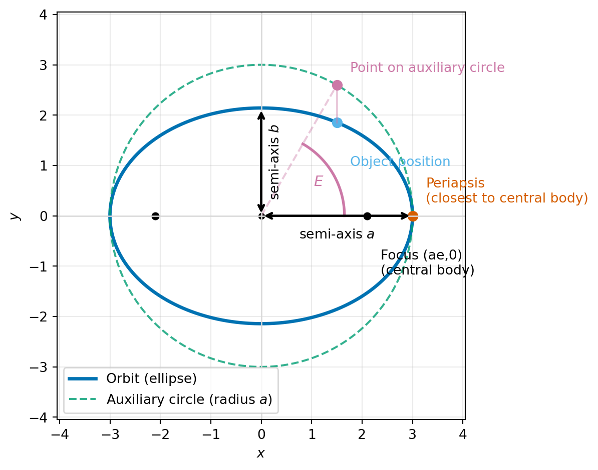
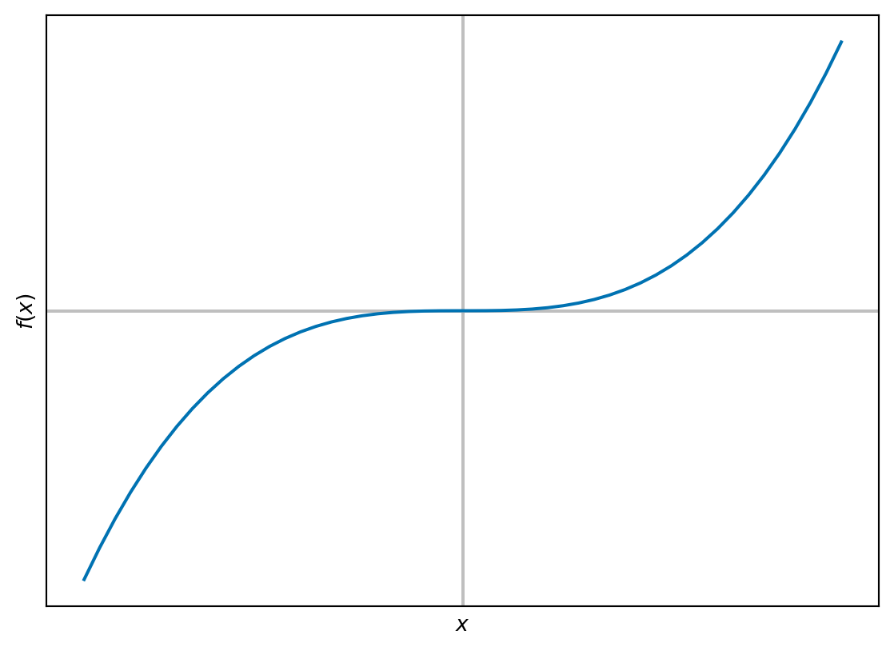
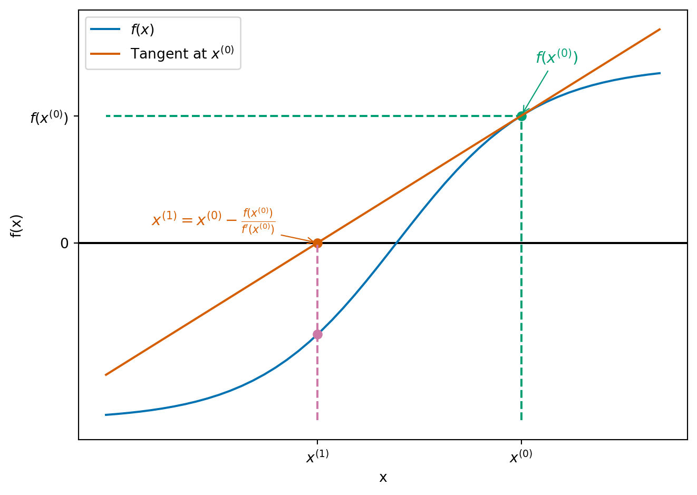
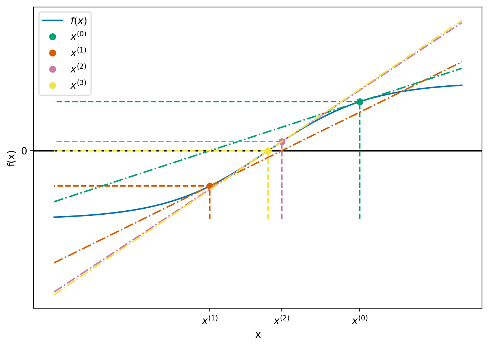
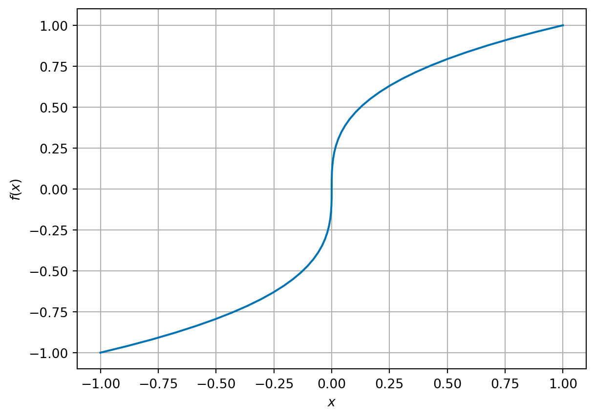
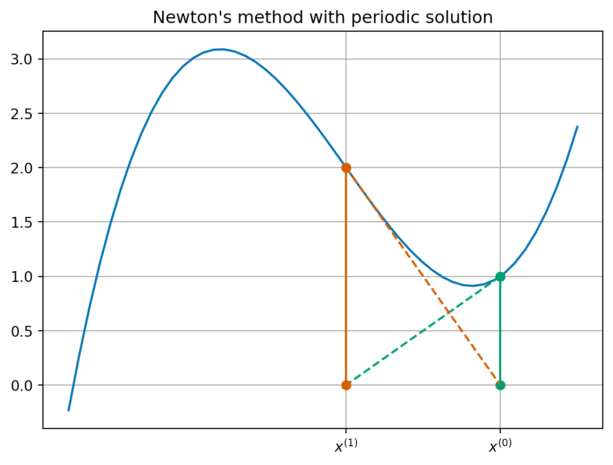

6Root finding methods for one dimensional optimisation
Author
Affiliation
Thomas Ranner
School of Computer Science, University of Leeds
TipModule learning objective
Explain why numerical methods are required for finding minima/solving nonlinear equations in one dimension,
Explain the idea of an iterative method,
Apply the Bisection Method and understand its properties,
Apply Newton’s method and understand its properties.
In one dimension, we will proceed with a simple idea: to find candidate minima of functions \(F \colon \mathbb{R} \to \mathbb{R}\), we will find points at which the derivative of \(F\) is 0. To help us with notation, in this section we will write \(f := F'\). The techniques developed in this section related to both optimisation of one dimensional optimisation problems, but also solving general scalar nonlinear equations.
Given a smooth function \(f(x)\), the problem is to find a point \(x^*\) such that \(f(x^*) = 0\). That is, \(x^*\) is a solution of the equation \(f(x) = 0\) and is called a root of \(f(x)\).
Remark 6.1. In one dimension, a local minimum occurs at point where \(F'(x) = 0\), but not every root of \(F'\) is a minimum. The focus on this lecture is finding possible minima.
Example 6.1
The linear equation \(f(x) = ax + b = 0\) has a single solution at \(x^* = \frac{-b}{a}\).
The quadratic equation \(f(x) = a x^2 + b x + c = 0\) is nonlinear, but simple enough to have a known formula for the solutions: \[
x^* = \frac{-b \pm \sqrt{b^2 - 4 a c}}{2a}.
\]
A general nonlinear equation \(f(x) = 0\) rarely has a formula like those above which can be used to calculate its roots.
It is also sometimes better to use numerical methods to solve an equation even if an exact formula exists:
the exact formula may have difficulties due to rounding errors;
the exact formula may be more expensive to compute.
Example 6.2 We want to solve the quadratic equation \[
f(x) = x^2 - (m + \frac{1}{m}) x + 1 = 0,
\] for large values of \(m\). The exact solutions are \(m\) and \(\frac{1}{m}\).
# implementation of quadratic formuladef quad(a, b, c):""" Return the roots of the quadratic polynomial a x^2 + b x + c = 0. """ d = np.sqrt(b * b -4* a * c)return (-b + d) / (2* a), (-b - d) / (2* a)# test for m = 1e8m =1e8roots = quad(1, -(m +1/ m), 1)print(f"roots {roots[0]:.4e} and {roots[1]:.4e}")
roots 1.0000e+08 and 1.4901e-08
These values look reasonable, but let’s check the errors:
The absolute errors are quite small, but the relative error for the second root is huge - almost 50%!
6.1 Example problems
We will test our methods on the following problems.
Example 6.3 (Square root example) We want to find the value of the square root of 2. We can solve this by finding the (positive) root of \[
f(x) = x^2 - 2.
\] This problem is interesting in that we know there are two solutions, but we only want the positive one. Our algorithms should take that into account.
Example 6.4 (Kepler’s equation, elliptic orbits) When an object moves under gravity around a planet or star, its path is often well-approximated by an ellipse. To work out where the object is at a given time, we use a standard relationship called Kepler’s equation. The key point here is: it reduces to finding a root of a function \(f(E) = 0\).
An ellipse has two semi-axes \(a\) and \(b\) and we assume that \(a > b\). We denote by \(e = \sqrt{1 - \frac{b^2}{a^2}}\) the eccentricity of the ellipse. The closest point on the ellipse to the central body (i.e. planet or star, which is at one of the foci of the ellipse) of the object’s trajectory is called the periapsis.
To connect time to position, it’s convenient to use an angle-like variable that increases at a constant rate - this variable is called the mean anomaly, \(M\) (measured in radians). \(M = 0\) corresponds to periapsis and \(M = \pi\) corresponds to half an orbit later.
There is a helpful intermediate angle called the eccentric anomaly which we write as \(E\). Since \(M\) is not the actual geometric angle around the ellipse, we use \(E\) as a useful angle from which we can compute quantities such that the coordinates of the object.

For an elliptic orbit with eccentricity \(0 \le e < 1\), the mean anomaly \(M\) is related to the eccentric anomaly \(E\) by Kepler’s equation: \[
E - e \sin(E) = M.
\] The problem is: Given \(e\) (eccentricity) and \(M\) (mean anomaly at a given time, in radians), find \(E^*\) (eccentric anomaly). We can write this as a root finding problem with \[
f(E) = E - e \sin(E) - M.
\] We should be careful to find a solution only in \([0, 2\pi)\). In our tests we will use \(e = 0.7, M = 2.0\). Note that \[
f'(E) = 1 - e \cos E \ge 1 - e > 0,
\] so \(f\) is strictly increasing and we know we only have one solution.
6.2 Iterative methods
All our methods will use the idea of iteration (or iterative improvement). We saw this idea when we were using Jacobi and Gauss-Seidel iteration to solve systems of linear equations.
Given an initial estimate of the root \(x^{(0)}\), try to generate a better approximate \(x^{(1)}\) of the root.
Once \(x^{(1)}\) has been computed, it can be used to compute another estimate \(x^{(2)}\) in the same way (and so on…).
Generally, \(x^{(i)}\) is used to compute \(x^{(i+1)}\) (although other previous estimates may be used as well).
There are many methods for doing this!
There are a few issues we should consider with iterative methods:
Does the iteration converge?
In other words, will \(x^{(i+1)}\) be a better estimate than \(x^{(i)}\)? In what sense – e.g. \(|f(x^{(i)})|\) smaller or \(|x^{(i)} - x^*|\) smaller?
Is there a way to check this as part of the computation? Can we prove this?
If the iteration does converge, then how quickly does this happen?
How should we decide when to stop the iteration?
Remark 6.2. We briefly comment that iteration is different to the idea of time stepping we met when solving differential equations. The number of time steps is a given parameter when solving a differential equation but we (normally) do not know how many iterations of a root finder are needed to find a solution (for a particular stopping criterion).
6.3 Bisection method
The first method that we introduce is the bisection method. This is a simple, slow but very robust method. It’s based on a simple idea: if a function is smooth (continuous) on an interval and changes sign between the two end points (either positive to negative or negative to positive), then it must be zero some point in between. (There is a mathematical analysis theorem called the Intermediate Value Theorem that gives us this result).

6.3.1 The algorithm
The algorithm steps are:
Suppose we know there is a root \(x^*\) (i.e with \(f(x^*) = 0\)) between two end points \(a\) and \(b\) (we sometimes call \([a, b]\) the bracket).
Call \(c = \frac{a + b}{2}\), then the solution is either between \(a\) and \(c\) or between \(c\) and \(b\).
If the solution is between \(a\) and \(c\):
then go to step 1 with the end points as \(a\) and \(c\),
otherwise, go to step 1 with the end points \(c\) and \(b\).
We repeat this process until \(b - a < TOL\) where \(TOL\) is a user-supplied value.
We can check if the root is between \(a\) and \(b\) by checking if the signs of \(f(a)\) and \(f(b)\) are different: i.e. \(f(a) f(b) < 0\).
6.3.2 Convergence analysis
Assume that \(k\) steps have been taken from an initial bracket \((a, b)\). We notice that at each step, the bracket size is halved. This means after \(k\) steps, the length of the interval will be \(\frac{b - a}{2^k}\).
For large initial bracket size (i.e. large \(b - a\)) or small \(TOL\) (high accuracy requirement) \(k\) will be large.
6.3.3 Examples
def bisection(f, a, b, tol):""" Find a root of a scalar function using the bisection method. The bisection method is a bracketing root-finder. Given an interval ``[a, b]`` such that ``f(a)`` and ``f(b)`` have opposite signs, the method repeatedly halves the interval and selects the subinterval that still brackets a root. The returned estimate is the midpoint of the final interval once its width is less than ``tol``. Parameters ---------- f : callable Scalar function of one variable, ``f(x)``, whose root is sought. Must be defined and (ideally) continuous on the interval ``[a, b]``. a : float Left endpoint of the initial bracket. b : float Right endpoint of the initial bracket. Must satisfy ``b > a``. tol : float Absolute tolerance on the interval width. Iteration stops when ``b - a <= tol``. Returns ------- data: list[dict] Iteration data for analysing results Raises ------ AssertionError If the initial interval does not bracket a root, i.e. if ``f(a) * f(b) >= 0``. Note that with the current implementation this also rejects cases where ``f(a) == 0`` or ``f(b) == 0`` (an endpoint is exactly a root). """# initial bracket checkassert f(a) * f(b) <0.0, f"({a}, {b}) does not bracket the root" data = []# the iteration it =0while b - a > tol:# find midpoint c = (a + b) /2# update bracketif f(a) * f(c) >0.0: a = celse: b = c it +=1 data.append({"it": it, "a": a, "b": b, "f(a)": f(a), "f(b)": f(b)})return data
\[
f(x) = x^2 - 2.
\]
it
a
b
f(a)
f(b)
1
1.000000
1.500000
-1.000000
0.250000
2
1.250000
1.500000
-0.437500
0.250000
3
1.375000
1.500000
-0.109375
0.250000
4
1.375000
1.437500
-0.109375
0.066406
5
1.406250
1.437500
-0.022461
0.066406
6
1.406250
1.421875
-0.022461
0.021729
7
1.414062
1.421875
-0.000427
0.021729
8
1.414062
1.417969
-0.000427
0.010635
9
1.414062
1.416016
-0.000427
0.005100
10
1.414062
1.415039
-0.000427
0.002336
11
1.414062
1.414551
-0.000427
0.000954
12
1.414062
1.414307
-0.000427
0.000263
13
1.414185
1.414307
-0.000082
0.000263
14
1.414185
1.414246
-0.000082
0.000091
We see that it takes 14 iterations to find the solution to a tolerance of \(10^{-4}\) for the square root problem.
\[
f(x) = x - 0.7 \sin(x) - 2.0
\]
it
a
b
f(a)
f(b)
1
0.000000
3.141593
-2.000000
1.141593
2
1.570796
3.141593
-1.129204
1.141593
3
2.356194
3.141593
-0.138780
1.141593
4
2.356194
2.748894
-0.138780
0.481015
5
2.356194
2.552544
-0.138780
0.163645
6
2.356194
2.454369
-0.138780
0.010294
7
2.405282
2.454369
-0.064809
0.010294
8
2.429826
2.454369
-0.027395
0.010294
9
2.442097
2.454369
-0.008585
0.010294
10
2.442097
2.448233
-0.008585
0.000846
11
2.445165
2.448233
-0.003871
0.000846
12
2.446699
2.448233
-0.001513
0.000846
13
2.447466
2.448233
-0.000334
0.000846
14
2.447466
2.447850
-0.000334
0.000256
15
2.447658
2.447850
-0.000039
0.000256
16
2.447658
2.447754
-0.000039
0.000109
We see that it takes 16 iterations to find the solution to a tolerance of \(10^{-4}\) for the Kepler problem
Exercise 6.1 For the square root problem, for which of the following brackets do you expect the algorithm to find a solution? For cases where you expect the algorithm to find a solution, how many iterations do you expect for a tolerance of \(10^{-4}\)?
\((1.0, 1.5)\)
\((0.0, 4.0)\)
\((-4.0, 4.0)\)
\((-2.0, 0.0)\)
6.3.4 Weaknesses of the bisection algorithm
Bisection is a reliable method for finding solutions of \(f(x) = 0\) provided an initial bracket can be found. It is far from perfect however:
finding an initial bracket is not always easy;
it can take a very large number of iterations to obtain an accurate answer;
it can never find a solution of \(f(x)\) for which \(f\) does not change sign (e.g. \(f(x) = (x-1)^2\)) since we cannot find a bracket for the root!
6.4 Newton’s method
Newton’s method (or the Newton-Raphson iteration) is an alternative algorithm for solving \(f(x) = 0\). On the positive side, it does not need an initial bracket (just one initial value), it converges much more quickly than bisection and it can solve problems where the solution is also a turning point. On the negative side, it is not guaranteed to converge (unlike bisection with a good initial bracket).

We start at our initial guess \(x^{(0)}\) and find the corresponding point on the graph of the function \((x^{(0)}, f(x^{(0)}))\). We find the tangent to the graph at \((x^{(0)}, f(x^{(0)}))\) and follow this line to the \(x\)-axis. Where the tangent line intersects the \(x\)-axis is our new value for \(x^{(1)}\).
In the picture, we can see two ways to calculate the tangent:
We can use the derivative of \(f\) to see that the slope of the tangent is \(f'(x^{(0)})\).
We can see that we have a right-angled triangle with vertices at \((x^{(1)}, 0)\), \((x^{(0)}, 0)\) and \((x^{(0)}, f(x^{(0)})\) which has slope \[
\frac{\text{change in $y$}}{\text{change in $x$}} = \frac{f(x^{(0)}) - 0}{x^{(0)} - x^{(1)}}.
\]
Equating the two slopes, we see that \[
f'(x^{(0)}) = \frac{f(x^{(0)})}{x^{(0)} - x^{(1)}},
\] which we can rearrange to \[
x^{(1)} = x^{(0)} - \frac{f(x^{(0)})}{f'(x^{(0)})}.
\] This is the formula for a single Newton update!
Once we have our updated estimate \(x^{(1)}\), we can continue the iteration: \[
x^{(i+1)} = x^{(i)} - \frac{f(x^{(i)})}{f'(x^{(i)})}.
\]

This is quite a messy plot but it appears the Newton’s method converges very quickly!
Remark 6.3.
The iteration formula requires an initial guess at the solution \(x^{(0)}\).
In order to apply Newton’s method, we need to be able to compute an expression for the derivative of \(f(x)\) - this may not always be possible or easy.
You will see a variant of Newton’s method that allows the derivative to be approximated in the lab session.
We typically use the absolute value of \(f(x^{(i)})\) as the variable we compare against a tolerance in a stopping criteria.
6.4.1 Examples
def newton(f, df, x0, tol, maxiter=20):""" Find a root of a scalar function using Newton's method. Newton's method (also called the Newton–Raphson method) generates a sequence of iterates ``x_{k+1} = x_k - f(x_k) / df(x_k)`` which (when it converges) typically converges rapidly to a root ``x*`` such that ``f(x*) = 0``. This implementation stops when ``abs(f(x)) <= tol`` or when ``maxiter`` iterations have been performed. Parameters ---------- f : callable Scalar function of one variable, ``f(x)``, whose root is sought. df : callable Derivative of ``f``, i.e. ``df(x) = f'(x)``. Must be defined at each iterate visited by the algorithm. x0 : float Initial guess for the root. tol : float Absolute tolerance on the residual. Iteration stops when ``abs(f(x)) <= tol``. maxiter : int, optional Maximum number of iterations to perform. Default is 20. Returns ------- data: list[dict] Iteration data for analysing results """ data = []# the iteration it =0 x = x0 data.append({"it": it, "x": x, "f(x)": f(x), "f'(x)": df(x)})whileabs(f(x)) > tol and it < maxiter: x_new = x - f(x) / df(x) x = x_new it +=1 data.append({"it": it, "x": x, "f(x)": f(x), "f'(x)": df(x)})return data
\[
f(x) = x^2 - 2.
\]
it
x
f(x)
f'(x)
0
1.000000
-1.000000
2.000000
1
1.500000
0.250000
3.000000
2
1.416667
0.006944
2.833333
3
1.414216
0.000006
2.828431
We see that it takes only 3 iterations to find the solution to a tolerance of \(10^{-4}\) for the square root problem.
\[
f(x) = x - 0.7 \sin(x) - 2.0
\]
it
x
f(x)
f'(x)
0
3.141593
1.141593
1.700000
1
2.470068
0.034541
1.548012
2
2.447754
0.000109
1.538158
3
2.447683
0.000000
1.538126
We see that it takes 3 iterations to find the solution to a tolerance of \(10^{-4}\) for the Kepler problem
Example 6.5 Consider \(f(x) = x^2 - 5\) and \(x^{(0)} = 2\). This gives \(f'(x) = 2x\) so the iterative formula is: \[
x^{(i+1)} = x^{(i)} - \frac{(x^{(i)})^2 - 5}{2 x^{(i)}} = \frac{(x^{(i)})^2 + 5}{2 x^{(i)}}.
\] The iteration then proceeds as: \[\begin{align*}
x^{(1)} & = \frac{(x^{(0)})^2 + 5}{2 x^{(0)}} = \frac{2^2 + 5}{2 \times 2} = \frac{9}{4} = 2.25. \\
x^{(2)} & = \frac{(x^{(1})^2 + 5}{2 x^{(1)}} = \frac{(2.25)^2 + 5}{2 \times 2.25} = \frac{161}{72} \approx 2.23611.
\end{align*}\] Note that \(\sqrt{5} = 2.23607\ldots\).
Exercise 6.2 Write down an expression for the Newton iteration formula for the following functions and then carry out 2 iterations using the resulting iteration and given initial value \(x^{(0)}\).
\(f(x) = x^3 - 2x - 5\) with \(x^{(0)} = 2\).
\(f(x) = x^3 - 2\) with \(x^{(0)} = 1\).
6.4.2 Challenges for Newton’s method
The first obvious challenge for Newton’s method comes from the idea that we divide by something that might be zero in our update formula – what if \(f'(x^{(i)}) = 0\)? In this case, there isn’t much we can do and Newton’s method will fail.
Example 6.6 Consider applying Newton’s method to the function \(f(x) = x^3 + 2x^2 + x + 1\) with \(x^{(0)} = 0\). This gives \(f'(x) = 3 x^2 + 4 x + 1\). Starting from \(x^{(0)} = 0\), we get: \[\begin{align*}
x^{(1)} &= x^{(0)} - \frac{f(x^{(0)})}{f'(x^{(0)})}
= 0 - \frac{0^3 + 2 \times 0 + 0 + 1}{3 \times 0^2 + 4 \times 0 + 1} = 0 - \frac{1}{1} = -1.
\end{align*}\] But we see that \[
f'(x^{(1)}) = 3 \times (-1)^2 + 4 \times -1 + 1 = 0.
\] So the iteration cannot proceed.
Another similar case is what if the derivative at the root is zero (i.e., \(f'(x^*) = 0\)), in this case the iteration can still proceed but the iteration is slower.
Consider \(f(x) = (x-1)^2 = x^2 - 2x + 1\):
it
x
f(x)
f'(x)
0
2.000000
1.000000
2.000000
1
1.500000
0.250000
1.000000
2
1.250000
0.062500
0.500000
3
1.125000
0.015625
0.250000
4
1.062500
0.003906
0.125000
5
1.031250
0.000977
0.062500
6
1.015625
0.000244
0.031250
7
1.007812
0.000061
0.015625
It takes 7 iterations to find the root in this case (more than the other Newton examples). We note here also that the convergence criterion is \(|f(x^{(i)})| < TOL\) which does not guarantee that \(|x^* - x^{(i)}| < TOL\)!
There are also cases where Newton’s method does not converge even when a root exists!
Example 6.7 Consider the function \(f(x) = x^{1/3}\). Clearly \(f\) has a root at \(x^* = 0\) (\(f(0) = 0\)).

The derivative is \(f'(x) = \frac{1}{3} x^{-2/3}\) and the Newton iteration is \[
x^{(i+1)} = x^{(i)} - \frac{(x^{(i)})^{1/3}}{\frac{1}{3} (x^{(i)})^{-2/3}} = x^{(i)} - 3 x^{(i)} = -2 x^{(i)}.
\] We can see that the general term in this sequence is \(x^{(i)} = (-2)^i x^{(0)}\) – this is clearly not going to converge to 0!
it
x
f(x)
f'(x)
0
1.000000
1.000000
0.333333
1
-2.000000
-1.259921
0.209987
2
4.000000
1.587401
0.132283
3
-8.000000
-2.000000
0.083333
4
16.000000
2.519842
0.052497
5
-32.000000
-3.174802
0.033071
6
64.000000
4.000000
0.020833
7
-128.000000
-5.039684
0.013124
8
256.000000
6.349604
0.008268
9
-512.000000
-8.000000
0.005208
10
1024.000000
10.079368
0.003281
It is even possible for the iteration to simply cycle between two values repeatedly.
Example 6.8 Consider the function \(f(x) = x^3 - 2x + 2\). This has derivative \(f'(x) = 3 x^2 - 2\).

Starting an iteration at \(x^{(0)} = 1\) gives:
it
x
f(x)
f'(x)
0
1.000000
1.000000
1.000000
1
0.000000
2.000000
-2.000000
2
1.000000
1.000000
1.000000
3
0.000000
2.000000
-2.000000
4
1.000000
1.000000
1.000000
5
0.000000
2.000000
-2.000000
6
1.000000
1.000000
1.000000
7
0.000000
2.000000
-2.000000
8
1.000000
1.000000
1.000000
9
0.000000
2.000000
-2.000000
10
1.000000
1.000000
1.000000
6.5 Summary
We have presented two methods for finding roots of nonlinear equations: the bisection method and Newton’s method. We summarise their properties in the following table:
Bisection
Newton
Simple algorithm
yes
yes
Starting values
bracket
one
Iterations
lots
normally fewer
Convergence
with good bracket
not always
Turning point roots
no
slower
Use derivative
no
yes
There are many more methods available - you will see one on the lab exercise sheet.